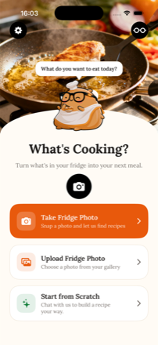
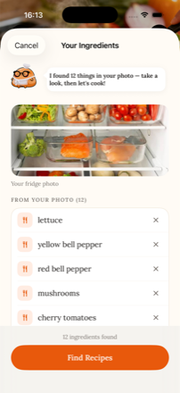
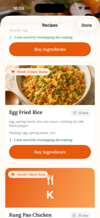
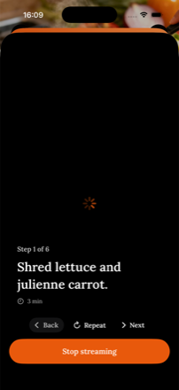
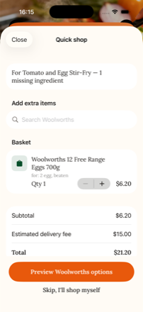
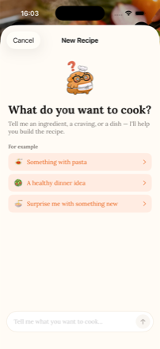

1st place · ICON x Lyra Hackathon, July 2026
iOS · Ray-Ban Meta glasses · team project






A recipe says thirty minutes and takes an hour. The gap is not the cooking. It is the ten to fifteen minutes spent deciding what to make, which no recipe ever counts; the rummaging to find out what you are missing; and washing and drying your hands every time you need the next step.
| Stage | Before | After |
|---|---|---|
| Deciding what to make | 10–15 min of scrolling | ~1 min — photo in, options out |
| Working out what's missing | ~10 min of rummaging | automatic — the gap becomes a basket |
| Getting the next step | wash, dry, unlock, scroll | say "next" |
That table is our own reasoned before-and-after, not a controlled measurement, and we said so in the pitch. The one number the app computes exactly is different: for each recipe it schedules steps that can overlap passive waiting and reports the difference against cooking them back to back — "6 min saved by overlapping the waiting" is a real subtraction, not an estimate.
Partway through, we went looking for prior art and found that every layer of this idea already shipped somewhere.
The judges were Lyra engineers. We had to assume at least one of them knew that Meta AI does cooking natively — which meant demoing "ask the glasses for a step" would invite exactly the wrong question.
"Hey Meta" does not know what is in your fridge, and does not remember that you don't eat beef. It has no persistent profile. That is the one thing a general assistant structurally cannot do.
So we stopped treating the diet profile as a settings screen and made it the product. The demo moment we built the pitch around was not the fridge photo — it was setting a restriction and watching the recipe list visibly change in front of the judge.
We also set aside a technically stronger angle: the glasses' beamforming microphone sits at your mouth, so it survives a noisy kitchen in a way a phone across the room does not. It was demonstrable live and it was real. We left it out because it was an engineer's argument in a competition where 40% of the score was whether the judge believed you personally had this problem.
The glasses are a peripheral, not a client — no app runs on them. The camera streams over Meta's DAT SDK, all the logic lives on the phone, and audio goes back out over Bluetooth. Voice commands are recognised on-device, so "next" does not wait on a network round trip.
We started on Gemini and moved to OpenAI for latency, then worked down the model sizes to
gpt-4.1-nano. Reading a fridge photo into a list of ingredients is not a hard
reasoning task, and on a step where you are standing there with your hands full, the smallest
model that clears the bar is the right one.
I built the iOS application, front to back — the SwiftUI screens, the step state machine and timers underneath them, the recipe and diet-profile logic, and the service layer talking to the model. One teammate designed the interface; another worked on the AI side running against the glasses.
The decision I would defend in an interview is putting step control on
SFSpeechRecognizer on-device rather than sending audio away and waiting. "Next" has
to land the instant you say it, standing over a hot pan — a network round trip you can feel is
worse than no voice control at all. The open-ended "Hey Chef" questions do go out to Whisper,
because there the extra second buys a much better answer. Two different problems, two different
answers, in the same app.
The command set is fixed — "next", "back", "repeat" — but accents are not, and the recogniser kept returning transcriptions that were confidently wrong.
Instead of guessing at the audio, I put a debug layer in front of it that logged what the recogniser actually heard next to the command it was supposed to trigger. Testing became data collection: every mis-hear went into a mapping table, so a command answers to the things people really say, not just the word in the spec. It is a lookup table built from observed failures and I would not call it elegant — but with a fixed vocabulary it turns an open-ended speech problem into a closed one, and it is the reason the app survived contact with voices that were not ours.
The second one I did not solve, and I had no excuse for it. We had wanted Whisper for the open-ended questions, and Whisper needs the network. On the day, the venue WiFi collapsed and the voice path failed in front of the judges. It worked on the second attempt and nothing was lost — but a month earlier I had lost a demo of Visual Eyes to an API key that would not connect, and I had already told myself the lesson. Knowing it did not change what I built.
So the rule now is a build rule, not a resolution: before a demo, everything on the critical path runs locally or it does not go in the script, however much better the remote version is.
Look for prior art on day one. We found the competing apps late enough that the finding only changed how we pitched — had we known at the start, it would have changed what we built. Searching for the reasons your own idea is unoriginal is uncomfortable, and it turned out to be the highest-leverage hour of the whole hackathon.